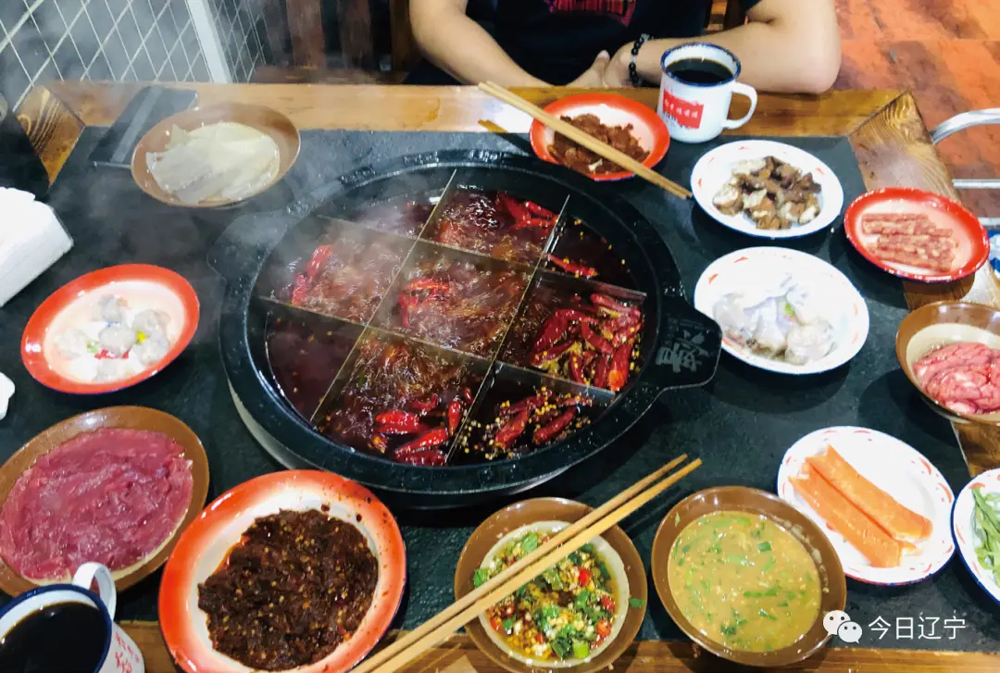

Top 3 Food in Shenyang
Shenyang Spicy Fried Chicken (La Jida)

Introduction
Shenyang Spicy Fried Chicken, or “La Jida,” is the city’s most famous street food—crunchy, spicy, and packed with flavor. It’s made with bite-sized pieces of chicken thigh (tenderer than breast meat), marinated in a mixture of chili powder, Sichuan pepper, garlic, and soy sauce for at least 30 minutes to lock in heat. The marinated chicken is then coated in a thin layer of cornstarch (for extra crispness) and deep-fried till golden brown. The final step is tossing the fried chicken with a hot sauce (made from chili oil, sesame oil, and a pinch of sugar) and garnishing with chopped green onions and white sesame seeds. Unlike other fried chickens, Shenyang’s version balances bold spiciness with a hint of sweetness—so it’s addictive but not overwhelming. You’ll find it at every street stall, from busy food alleys to night markets.
Taste
Texture: Ultra-crispy on the outside (thanks to the cornstarch coating) and juicy inside— the frying process seals in the chicken’s moisture, so it never feels dry.
Flavor: Spicy (with a slow, lingering heat from Sichuan pepper) balanced by a subtle sweetness from the sauce, and a nutty aroma from sesame seeds. The garlic adds depth without being overpowering.
Pairing: Perfect with cold beer in summer, or with a bowl of hot rice in winter— the spiciness is tamed by the rice, and the crunch adds texture.
Price
Street stalls/food alleys: 15–25 CNY/small portion (enough for 1 person), 30–40 CNY/large portion (shares for 2–3 people).
Specialty shops (e.g., “Old Shenyang La Jida”): 25–35 CNY/small portion (uses higher-quality chicken, more sauce).
Add-ons: Extra chili sauce (+2 CNY), cheese powder (+3 CNY) for a modern twist.
Liaoning-Style Hot Pot (Liaoning Guozi)

Introduction
Liaoning-Style Hot Pot is Shenyang’s take on this classic Chinese dish—milder than Sichuan’s spicy hot pot and richer than Beijing’s clear broth version. The base is a slow-simmered bone broth (beef or pork bones boiled for 3–4 hours), seasoned with goji berries, wolfberries, and a slice of ginger (for warmth and nutrition). Unlike other hot pots that use pre-made broth, Shenyang’s version often lets you add fresh ingredients to the pot while it simmers—like dried shrimp or mushrooms—to boost umami. The star ingredients are fresh lamb slices (so thin they’re almost translucent; cook in 10 seconds) and local mushrooms (like hazel mushroom, which grows in Northeast China’s forests). Dipping sauce is key: a mix of sesame paste, fermented tofu, garlic, coriander, and a splash of hot pot broth (to thin it out). It’s a communal meal—locals love gathering around the hot pot with family and friends, especially in winter.
Taste
Broth: Light golden, savory, and slightly sweet (from the bones and goji berries)—you can even sip it directly before adding ingredients.
Lamb: Tender and juicy, with a mild meaty flavor—no gamey taste, thanks to high-quality local lamb.
Dipping sauce: Creamy (from sesame paste) with a tangy kick (fermented tofu) and freshness from coriander—balances the richness of the meat.
Price
Family-style restaurants: 80–120 CNY/person (includes broth, lamb, 2–3 vegetables, and dipping sauce).
Hot pot chains (e.g., “Liaoning Old Hot Pot”): 60–90 CNY/person (all-you-can-eat options available for 120–150 CNY/person).
Street food stalls (smaller pots): 30–50 CNY/person (simpler version, no goji berries, but still delicious).
Shenyang Cold Noodles (Liangmian)

Introduction
Shenyang Cold Noodles are a summer staple—refreshing, tangy, and filling, they’re perfect for beating the heat. Unlike the thin cold noodles in other regions, Shenyang’s version uses thick wheat noodles (chewy and firm, made by pressing dough through a sieve). The noodles are boiled, then rinsed with cold water to cool them down and keep them chewy. The sauce is the star: a mix of rice vinegar (tangy), light soy sauce (savory), chili oil (spicy), sugar (sweet), and a splash of chicken broth (for depth). Toppings usually include shredded cucumber (crunchy), boiled egg (sliced), and sometimes shredded chicken or pickled radish. It’s a quick, affordable meal—street vendors often serve it in paper bowls, so you can eat it on the go. In winter, some stalls offer “warm cold noodles” (noodles rinsed with warm water, sauce heated slightly)—a cozy twist.
Taste
Noodles: Chewy and firm, with a slight wheat flavor—they hold onto the sauce well, so every bite is flavorful.
Sauce: Tangy (from vinegar) with a balance of sweet and spicy—bright and refreshing, never heavy.
Toppings: Shredded cucumber adds crunch, while the boiled egg adds creaminess—textures complement the noodles perfectly.
Price
Street stalls: 8–15 CNY/bowl (basic version with cucumber and egg).
Local eateries: 12–20 CNY/bowl (add-ons like shredded chicken +5 CNY, pickled radish +2 CNY).
Winter “warm version”: Same price as cold—just ask the vendor to skip the cold water rinse.